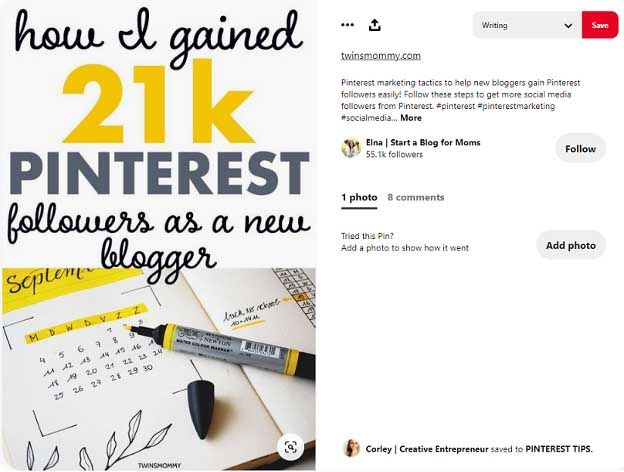

In today’s world of fast-changing trends and user needs, marketers and small business owners keep looking for alternative promotion strategies. Social media tools and channels are many, but there’s one undervalued regardless of its popularity among users.
Do you know that pins are 100 times more spreadable than a tweet, and a pin’s “life” is 1,6x longer than that of a Facebook post?
What if we tell you that 89% of Pinterest users come to the platform to make purchasing decisions, and 47% — to find products and shop there?
More than that, business promotion on Pinterest doesn’t require millions of followers or big money on ads. All this makes the platform a honey pie for marketers: They predict Pinterest to turn into one of the best social media platforms for sales in 2021.
The question remains:
How to use Pinterest for marketing? How to create popular pins, and how to advertise on Pinterest for max benefit?
Keep on reading to find all the answers in this post.
Switch to a Business Account and Choose Boards Right
It stands to reason that you’ll need a Pinterest business account to promote your products, services, and marketing content there. It’s free. And, with regular efforts, you’ll soon get new Instagram and YouTube followers, more orders or organic website traffic, and even higher rankings in Google.
Why business, not personal accounts on Pinterest?
- First, you’ll get access to the extensive profile analytics.
- Second, you’ll turn on two-factor authentication for security.
- Third, you’ll build brand awareness and reputation.
Make your business profile recognizable. Add an avatar, use the same name as in your Instagram account or website. Consider keywords when choosing a display name and filling in your “Profile info” line.
Fill in your contact information: phone, website, physical store address if necessary. Be sure to include your Instagram, YouTube channel, or website (depending on what’s available) in the “Confirm” section.
Think of Pinterest as a visual search engine. You need to organize all the content so that it would be searchable. And sure thing, it should meet your target audience’s needs too.
Make sure you understand what your targets search for on Pinterest: Audience research, media monitoring, and social media analytics are your instruments to get corresponding insights here.
Then, examine the most popular Pinterest categories to find the boards that will work best for your business.
How to choose the right boards?
- When creating a business account, you’ll see a list of boards to add. Choose those most relevant to your niche.
- Check monthly and annual reports on Pinterest trending searches.
- Consider keywords: Use those specific to your brand and those your targets use; organize your Pinterest boards accordingly.
Design Pins Your Audience Will See and Love
If you want to promote your business and start making money from Pinterest, do your best to learn the secrets of creating eye- and attention-grabbing pins. Remember that users scroll their home feeds full of different pictures; yours need to stop them and motivate them to click.

What does Pinterest itself say about creating a visually-appealing pin?
- Use vertical images. Given that 85% of users visit Pinterest via mobile phones, a 2:3 aspect ratio will be the best option. Square, Instagram-like images are OK to use too, but please avoid horizontal ones. Pinterest templates on Crello or Canva (online graphic design tools for web and social media content creation) will save your time and efforts.
- Choose bright, hard images.
- Place a product at the heart of your image. Avoid abstract pictures.
- Demonstrate your product contextually: Help users understand why they need it.
- Put your logo in the image.
- Use a text overlay: With the help of writing apps, come up with slogans or short descriptions to tell the audience what your pin is about. (Remember: They’ll see the image before its title and description.)
Any other tips?
Add your brand name at the bottom of the pins. Use bold, complementary, and easy to read fonts and colors. And remember about Pinterest SEO to make sure your beautiful pins will appear in search results and get noticed.
Pinterest SEO is all about using specific keywords and adding them to the right places of your profile and pins.
Where to add keywords in business profiles: a display name, a profile description, board names, and board descriptions.
Where to add keywords in pins: a title (consider keyword variations to rank for different search results), a description (consider the first 50-60 characters, as that’s what users see before the “More” button), hashtags, text overlay (Pinterest algorithm reads images), alt text, and URL.
Promote Your Business with Pinterest Ads
Pinterest offers ads of many types, and it’s your great chance to earn awareness from users in their buying journey. Indeed, 98% of Pinterest users say they try new things they find on the platform, and more than half purchase products after seeing them in home feeds.
With Pinterest ads, you can target the audience around gender, age, language, location, interests, or keyword phrases. The ad features also allow you to segment the targets by more specific groups like customers, website visitors, users engaged with your pins or similar content, etc.
It helps to optimize your content strategy accordingly and design different pins for different target groups. You will test different titles, descriptions, pin formats, ad types, keywords, and other attributes to learn what works best for your business needs.
Here go seven Pinterest ads types to consider:
- Promoted pins. They appear in the home feeds and look like regular pins, except that they have the “Promoted” label. Targeted to deliver more reach, such pins work best for brand awareness.
- One-tap pins. When clicking on them, users go to your landing page directly.
- Promoted carousels. These are multi-image (two to five) ads, perfect to use if you have several products or multiple features to showcase.
- Video pins. They work like Promoted pins but demonstrate a video instead of static images.
- Buyable pins. Designed to be shoppable, they allow users to purchase your product or service directly from the pin.
- Story pins. Featuring up to 20 pages, these pins appear with a title, cover image, and “Story” label in home feeds. Tapping a Story pin, users will see all of its pages.
- Promoted app pins. Such pins allow users to download mobile apps directly from Pinterest. Given that 80% of Pinterest traffic comes from mobiles, this ad type can be the perfect option for corresponding businesses.
What do you want to get from ads: get traffic to the website, build your brand awareness, or maybe grow the number of leads who’ll install your mobile app? Depending on your marketing goals and business needs, choose the Pinterest ads type that will work best for you.
Conclusion
Visual search is on its rise in 2021; more and more users come to social media platforms to find stuff to buy; such a tendency makes Pinterest one of the most attractive platforms for brands. So if your target audience chooses Pinterest to make buying decisions, look for product ideas, or even buy directly from the platform, it’s high time to promote your business and start making money there.
That’s what to do on Pinterest to promote your brand:
- Create a business account (or switch your personal to business).
- Based on keywords and your target audience’s needs, choose boards or create new ones accordingly.
- Optimize your profile and pins for search.
- Design pins for better reach, visibility, and user love.
- Make sure to create a Pinterest content strategy, and consider Pinterest ads for better promotion.
- Be an active Pinterest user: post frequently, engage with your followers, reply to comments, follow others’ boards, etc.
- Use Calls-to-Pin to influence the shareability of your content.
Don’t miss the marketing potential of the Pinterest platform in 2021. Follow the above steps — and the positive results won’t take long in coming.
Author Bio
Lesley Vos is a web writer from Chicago. Currently writing for the Bid4Papers blog, she also contributes content for many publications on digital marketing, SEO copywriting, and social media. Feel free to follow Lesley on Twitter.
Priya Sharma says
Hi there! thanks for sharing this amazing article with us I was actually looking for something like this, I am really glad the I found your article and got all the answers of my queries.
Elaina M says
We are glad that you like it and find it useful, if you want to find more helpful pieces, don’t hesitate to browse through our blog articles.